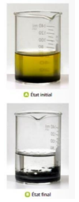

Transformation totale vs non totale
Soit une transformation : aA + bB → cC + dD
On compare l'avancement final xf à l'avancement maximal xmax :
| Cas | Condition | Type de transformation |
|---|---|---|
| A ou B limitant(s) | xf = xmax | ✅ Totale — au moins un réactif est entièrement consommé |
| Ni A, ni B limitants | xf < xmax | ⚠️ Non totale — réactifs et produits coexistent à l'état final |
Taux d'avancement final τ
Le taux d'avancement final τ mesure la fraction du réactif limitant ayant réellement réagi :
Si τ = 1 → transformation totale
Si τ < 1 → transformation non totale (présence de réactifs à l'état final)
🎛️ Animation – Taux d'avancement final τ
Déplace les curseurs pour faire varier xf et xmax et observer l'effet sur τ et sur la composition à l'état final.
| Espèce | ninitial (mol) | Variation (mol) | nfinal (mol) |
|---|---|---|---|
| CH₃COOH (acide) | 1,00 | − | — |
| C₂H₅OH (éthanol) | 1,00 | − | — |
| CH₃COOC₂H₅ (ester) | 0,00 | + | — |
| H₂O (eau) | 0,00 | + | — |
Modèle de l'équilibre dynamique
Dans une réaction non totale, l'état d'équilibre est qualifié d'équilibre dynamique :
À l'équilibre, les deux réactions opposées se compensent exactement :
les quantités de matière n'évoluent plus, mais les deux réactions continuent.
📝 Application – Taux d'avancement
CH3COOH + C2H5OH ⇌ CH3COOC2H5 + H2O
On introduit 1,0 mol d'acide acétique et 1,0 mol d'éthanol. À l'équilibre, on trouve 0,67 mol d'ester formé.
Quotient de réaction Qr
Le quotient de réaction Qr est une grandeur sans unité qui caractérise l'état du système à un instant donné.
Pour la réaction : aA(aq) + bB(aq) ⇌ cC(aq) + dD(aq)
c° = 1 mol·L-1 (concentration standard) — Qr est sans unité
Convention : l'eau solvant et les espèces solides non miscibles n'interviennent pas dans l'expression de Qr.
Constante d'équilibre K(T)
À l'état d'équilibre, le quotient de réaction prend une valeur appelée constante d'équilibre :
Si K > 104 → la réaction est considérée comme totale.
Critère d'évolution spontanée
On compare le quotient de réaction initial Qr,i à K(T) :
A et B se consomment,
C et D se forment
Qr augmente → K(T)
N'évolue pas
(état stationnaire)
C et D se consomment,
A et B se forment
Qr diminue → K(T)
🌿 Animation – L'Arbre de Diane : couples Cu²⁺/Cu et Ag⁺/Ag
Glisse le réducteur et l'oxydant dans le bécher, puis observe l'évolution et le lien avec K.
glisse ici
glisse ici
📝 Application 1 – Sens d'évolution d'une réaction d'oxydoréduction (Ni/Pb)
Ni(s) + Pb2+(aq) ⇌ Ni2+(aq) + Pb(s)
État initial : [Ni2+]i = 1,0 mol·L-1 et [Pb2+]i = 2,0 × 10-4 mol·L-1
📝 Application 2 – Réaction Zn / Cu2+ par contact direct
Zn(s) + Cu2+(aq) ⇌ Zn2+(aq) + Cu(s)
État initial : [Cu2+]i = 2,0 × 10-2 mol·L-1 et [Zn2+]i = 3,5 × 10-2 mol·L-1
📝 Application 3 – Prévoir le sens d'évolution : trois réactions d'oxydoréduction
Choisis une réaction et un jeu de concentrations initiales. Calcule mentalement Qr,i, compare à K(T), puis vérifie sur le graphique.
Réaction 1
🔋 Application – Simulation de la pile Daniell (PCCL)
Utilise la simulation interactive pour explorer le fonctionnement de la pile Daniell : identifier la borne positive et la borne négative, suivre le déplacement des électrons dans le circuit extérieur et des ions dans le pont salin, et lire la tension à vide.
La simulation s'ouvre dans un nouvel onglet · pccl.fr · Terminale
Rappel – Réactions d'oxydo-réduction
Une réaction d'oxydoréduction met en jeu deux couples oxydant/réducteur :
(l'oxydant d'un couple réagit avec le réducteur d'un autre)
- Oxydation (anode) : le réducteur perd des électrons → Red → Ox + ne–
- Réduction (cathode) : l'oxydant gagne des électrons → Ox + ne– → Red
Anode (–) : Zn(s) → Zn2+(aq) + 2e– (oxydation)
Cathode (+) : Cu2+(aq) + 2e– → Cu(s) (réduction)
Bilan : Zn(s) + Cu2+(aq) → Zn2+(aq) + Cu(s) — K(25°C) = 1037
www.pccl.fr — Équilibrer les demi-équations électroniques et les réactions d'oxydoréduction
🧲 Activité – Classer les oxydants et réducteurs usuels
Glisse chaque espèce dans la bonne catégorie :
Constitution et fonctionnement d'une pile
– Anode (borne –)
Oxydation
Le réducteur cède des électrons
Red → Ox + ne–
Électrons émis vers le circuit extérieur
+ Cathode (borne +)
Réduction
L'oxydant capte des électrons
Ox + ne– → Red
Électrons reçus du circuit extérieur
- Chaque compartiment (demi-pile) contient un couple Ox/Red, généralement du type Mn+(aq) / M(s). La plaque métallique est l'électrode.
- Si le réducteur n'est pas métallique, on utilise une électrode inerte (platine ou carbone).
- Le pont salin (solution ionique gélifiée) ferme le circuit et assure la neutralité électrique.
- La tension à vide permet de déterminer la polarité des électrodes.
Capacité électrique d'une pile — Qmax
La capacité électrique est la charge maximale que la pile peut débiter :
NA = 6,02 × 1023 mol-1 · e = 1,6 × 10-19 C
Constante de Faraday : F = NA × e = 9,65 × 104 C·mol-1
Également : Qmax = I × Δt
Pile usée : Qr = K (système à l'équilibre — plus de débit de courant).
⚠️ Point clé — Réactifs en contact direct vs réactifs séparés (pile)
Cu²⁺ et Zn(s) se trouvent dans le même volume V.
Le transfert d'électrons est direct (pas de courant utilisable).
Qr,i = [Zn²⁺]i / [Cu²⁺]i
Les deux ions et coexistent dans V → concentrations directement utilisables.
Zn²⁺ uniquement dans V₁ | Cu²⁺ uniquement dans V₂.
Le pont salin assure la neutralité — pas de mélange.
Qr,i = [Zn²⁺]i / [Cu²⁺]i
⚠️ On N'additionne PAS V₁ + V₂ — chaque ion reste dans son compartiment !
Qr,i = n(Zn²⁺) / V ÷ n(Cu²⁺) / V
Qr,i = n(Zn²⁺) / n(Cu²⁺)
Qr,i = n(Zn²⁺) / V₁ ÷ n(Cu²⁺) / V₂
Qr,i = n(Zn²⁺) × V₂ / (n(Cu²⁺) × V₁)
• Si en contact direct, V se simplifie → Qr,i = n(Zn²⁺) / n(Cu²⁺)
• Si en contact indirect, comme la pile avec V₁ ≠ V₂ → Qr,i = n(Zn²⁺) · V₂ / (n(Cu²⁺) · V₁) — les volumes modifient Qr,i
• Si en contact indirect, comme la pile avec V₁ = V₂ → V se simplifie aussi → Qr,i = n(Zn²⁺) / n(Cu²⁺) ✅
⚠️ Attention à la stœchiométrie : Pour Zn(s) + 2 Ag⁺(aq) ⇌ Zn²⁺(aq) + 2 Ag(s) :
Qr,i = [Zn²⁺]i / [Ag⁺]i² = (n(Zn²⁺)/V₁) / (n(Ag⁺)/V₂)² = n(Zn²⁺) · V₂² / (n(Ag⁺)² · V₁)
Même si V₁ = V₂ = V : Qr,i = n(Zn²⁺) · V² / (n(Ag⁺)² · V) = n(Zn²⁺) · V / n(Ag⁺)² — V ne se simplifie pas car les exposants stœchiométriques sont différents (1 ≠ 2).
📝 Entraînement — Contact direct ou pile ? Calcul de Qr,i
On dispose de deux dispositifs avec les mêmes concentrations initiales :
[Cu²⁺]i = 2,0 × 10⁻² mol·L⁻¹ dans V₂ = 200 mL et [Zn²⁺]i = 3,5 × 10⁻² mol·L⁻¹ dans V₁ = 100 mL
📝 Application – Sens d'évolution (Cu/Zn en contact)
État initial : [Cu2+]i = 2,0 × 10-2 mol·L-1 et [Zn2+]i = 3,5 × 10-2 mol·L-1
📝 Application – Capacité électrique d'une pile alcaline
Demi-équations :
Anode : Zn(s) + 2 HO–(aq) → ZnO(s) + H2O(l) + 2e–
Cathode : MnO2(s) + H2O(l) + e– → MnO(OH)(s) + HO–(aq)
🧪 Expérience 1 — Évolution spontanée d'un système chimique
Dans un bécher, on mélange le même volume V = 20 mL de trois solutions aqueuses de concentration c = 0,015 mol·L⁻¹ :
- diiode I₂(aq)
- iodure de potassium (K⁺(aq) ; I⁻(aq))
- sulfate de zinc (Zn²⁺(aq) ; SO₄²⁻(aq))
On ajoute 20 mg de poudre de zinc dans le bécher.

📝 Questions — Expérience 1
⚡ Expérience 2 — Évolution forcée
Un générateur de tension continue peut forcer un système chimique à évoluer dans le sens opposé à son sens d'évolution spontanée.
- Verser le mélange précédent dans un tube en U et placer une électrode de graphite à chaque ouverture.
- Relier ces électrodes à un générateur délivrant une tension continue de 6,0 V.
📝 Questions — Expérience 2
📌 Conclusion
- Pour une transformation non totale, lorsque Qr,i < K(T), le système évolue spontanément dans le sens direct.
- Un générateur de tension continue peut forcer le système chimique à évoluer dans le sens opposé à son sens d'évolution spontanée.
🎬 Animation – Électrolyse de l'eau
Avance étape par étape pour suivre la construction du schéma, ou lance l'animation automatique.
Étape 1 / 11
B.1 – Électrolyseur
Un électrolyseur est constitué d'une cuve contenant deux électrodes reliées à un générateur de tension continue :
- Anode (reliée au pôle + du générateur) : siège de l'oxydation — le générateur capte les électrons produits.
- Cathode (reliée au pôle – du générateur) : siège de la réduction — le générateur fournit les électrons nécessaires.
Pile : conversion énergie chimique → électrique (réaction spontanée, Qr ≠ K).
Électrolyseur : conversion énergie électrique → chimique (réaction forcée, sens inverse du spontané).
B.1 – Quantité de charges et quantité de matière
Lors d'une électrolyse de durée Δt à intensité constante I :
Cette quantité de charges est liée à la quantité d'électrons échangés :
→ on peut en déduire les variations de quantité de matière aux électrodes.
📝 Application – Électrolyse d'une solution de ZnI2
Demi-équations de l'électrolyse :
Anode : 2 I–(aq) → I2(aq) + 2e–
Cathode : Zn2+(aq) + 2e– → Zn(s)
B.3 – Stockage et conversion d'énergie chimique
🔋 Pile
- Énergie chimique → électrique
- Réaction d'oxydoréduction spontanée
- Non rechargeable
- Exemples : pile Daniell, pile alcaline, pile à combustible
ampere.cnrs.fr · s'ouvre dans un nouvel onglet ↗
🔄 Accumulateur
- Décharge : fonctionne comme une pile (chem. → élec.)
- Charge : fonctionne comme un électrolyseur (élec. → chem.)
- Les réactions aux électrodes sont opposées lors de la charge et de la décharge
- Exemples : batterie Li-ion, accu Pb
cea.fr · s'ouvre dans un nouvel onglet ↗
💧 Pile à combustible H₂
- H₂ (anode) + O₂ (cathode) → H₂O + électricité
- Enjeu : vecteur énergétique propre
- Nécessite de l'H₂ produit (idéalement par électrolyse de l'eau)
cea.fr · s'ouvre dans un nouvel onglet ↗
🌿 Organismes chlorophylliens
- Photosynthèse : énergie solaire → énergie chimique (glucides)
- Stockage de l'énergie sous forme de liaisons chimiques
- Libération ultérieure par respiration cellulaire
svt-imbert.fr · s'ouvre dans un nouvel onglet ↗
Principe de la pile à combustible à hydrogène
La pile à combustible est un générateur électrochimique qui convertit directement l'énergie chimique d'un combustible (le dihydrogène H₂) en énergie électrique, sans combustion, grâce à deux demi-réactions aux électrodes :
Anode (–) — oxydation
H₂ → 2H⁺ + 2e⁻
Le dihydrogène cède ses électrons au circuit extérieur. Des ions H⁺ traversent la membrane vers la cathode.
Cathode (+) — réduction
O₂ + 4H⁺ + 4e⁻ → 2H₂O
Le dioxygène (air) est réduit en présence des ions H⁺ et des électrons provenant du circuit extérieur. Le seul « déchet » est de l'eau.
Partie A.1 – Transformation non totale
- xf < xmax → non totale : réactifs et produits coexistent à l'état final
- τ = xf / xmax, avec 0 < τ < 1 si non totale
- Équilibre dynamique : les deux réactions inverses se compensent en permanence
- K > 104 → réaction considérée comme totale
Partie A.2 – Critère d'évolution
- Qr = ∏[produits]stœchio / ∏[réactifs]stœchio (sans unité)
- Solides et eau solvant exclus de Qr
- Qr,i < K → sens direct (→)
- Qr,i = K → équilibre, pas d'évolution
- Qr,i > K → sens indirect (←)
Partie A.3 – Piles électrochimiques
- Anode (borne –) : oxydation — Red → Ox + ne–
- Cathode (borne +) : réduction — Ox + ne– → Red
- Pont salin : ferme le circuit + assure la neutralité électrique
- Qmax = n(e–)max × F = I × Δt (en coulombs)
- Pile qui débite : Qr ≠ K — Pile usée : Qr = K
Partie B – Électrolyse & Stockage
- q = I × Δt et q = n(e–) × F
- Anode (pôle + du générateur) : oxydation forcée
- Cathode (pôle – du générateur) : réduction forcée
- Accumulateur : pile lors de la décharge, électrolyseur lors de la charge
- Piles à combustible et accumulateurs Li-ion : enjeux de transition énergétique
▶ Vidéo — Sens d'évolution
Cours n°5 · Sciences physiques à Stella
Parties A.1 et A.2
▶ Vidéo — Piles électrochimiques
Cours n°6 · Sciences physiques à Stella
Partie A.3
⚗️ Simulation — Équilibrer les équations redox
PCCL · Ajuster les demi-équations électroniques et les équations d'oxydoréduction
🔋 Simulation — Pile Daniell
PCCL · Fonctionnement, polarité des électrodes, rôle du pont salin
🔬 Simulation — Piles électrochimiques
Ostralo · Construire et explorer différentes piles, observer les réactions aux électrodes
▶ Vidéo — Électrolyseur et pile à combustible
CEA · Fonctionnement de l'électrolyseur et de la pile à combustible · Partie B